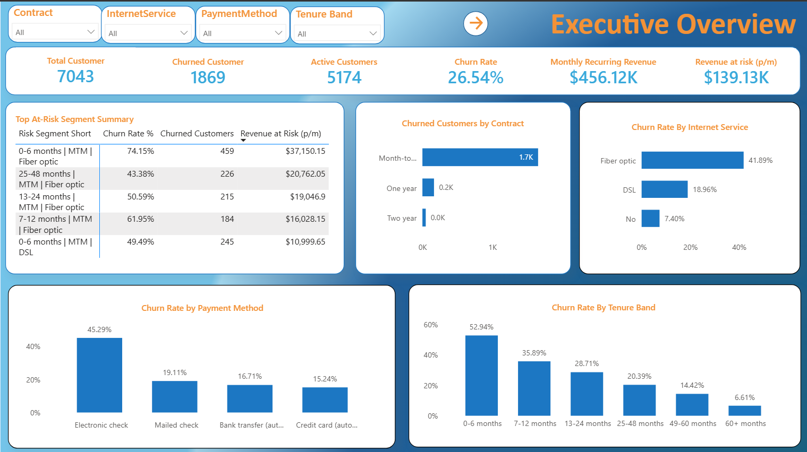
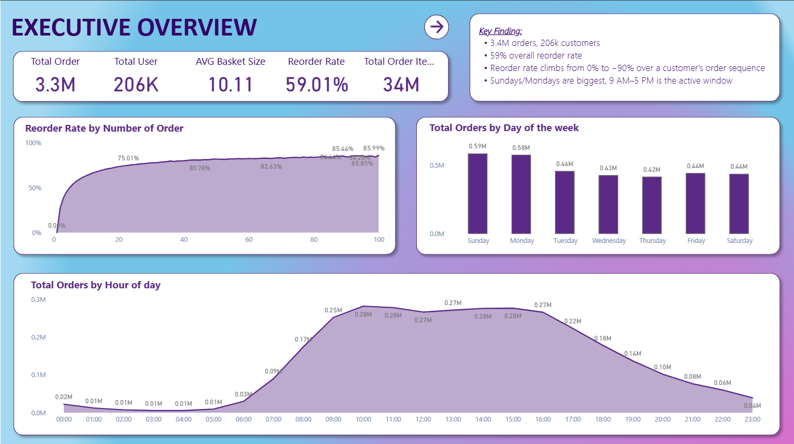
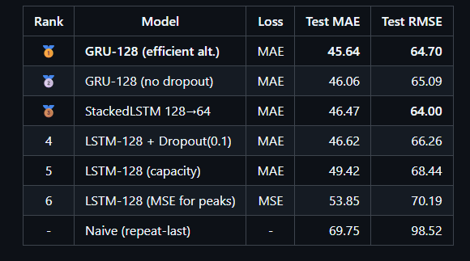
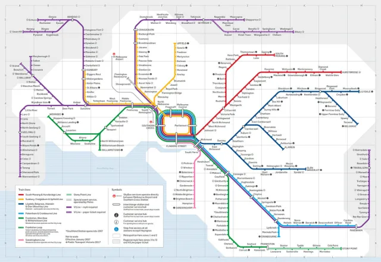

$1.67M Revenue at Risk
Quantified annualised revenue risk in a telco churn project and translated customer attrition patterns into prioritised retention recommendations.
Quantified annualised revenue risk in a telco churn project and translated customer attrition patterns into prioritised retention recommendations.
Designed a SQL Server data warehouse for Instacart basket analysis using dimensional modelling, validation checks, and Power BI reporting.
Built and benchmarked recurrent neural network models for 24-hour PM2.5 air quality forecasting using Python and TensorFlow.
Strong experience translating technical problems into business language through Microsoft Dynamics 365 CRM and analytics project delivery.

Analysed a 7,043-customer telco dataset to identify churn drivers, quantify revenue risk, and recommend targeted retention actions for high-risk customer segments.

Built a SQL Server data warehouse and Power BI report to analyse basket behaviour, reorder patterns, department performance, and cross-sell opportunities.

Developed and compared recurrent neural network models for 24-hour PM2.5 forecasting, with a focus on predictive performance and deployment limitations.

Integrated Victorian public transport datasets to analyse patronage recovery, travel patterns, and mode-level differences after major demand changes.
A practical toolkit across analytics, BI reporting, data modelling, and stakeholder-facing business analysis.
I position myself as a Business Analytics professional who can connect business questions, technical analysis, and stakeholder communication. My background includes Microsoft Dynamics 365 CRM support, customer-data problem solving, and applied analytics projects using SQL, Python, Power BI, and DAX.
I am especially interested in roles involving Power BI reporting, SQL data modelling, commercial analytics, customer insights, and business-facing data analysis. My strongest portfolio work focuses on churn analysis, basket analysis, forecasting, public data analysis, and dashboard-driven recommendations.
I am open to Business Analytics, Data Analysis, BI Analyst, Power BI, and SQL-focused roles in Melbourne.